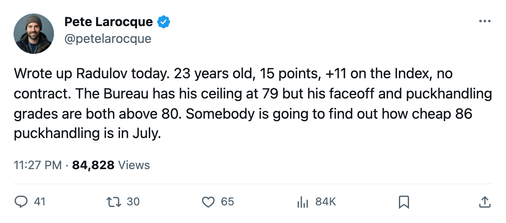
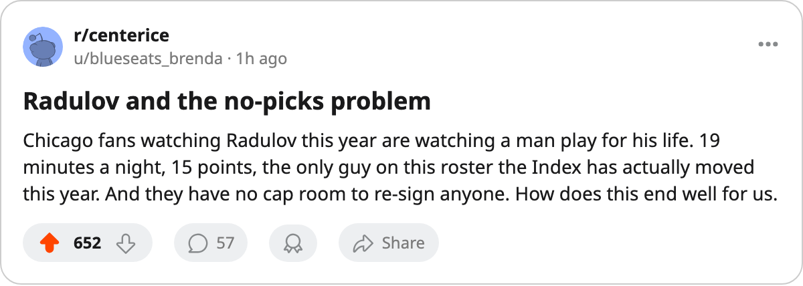

The Index's Biggest Move in Chicago Is on a $0.60M Man With No Contract
Igor Radulov is the league's cheapest riser and the most expendable. Chicago has 31 points and no reason to believe any of this holds.
 Pete LarocqueScouting editor · The Prospect File
Pete LarocqueScouting editor · The Prospect File
Igor Radulov
Igor Radulov80 is tied for the 2nd-biggest move on the Bureau's Development Index at +11. He costs $0.60M. His contract has 0 years left. He plays for a team with 31 points in 38 games.
I have been watching this kid since the 2000 draft, when  Chicago Blackhawks picked him 74th overall in the 3rd round out of Nizhny Tagil. He was 18 in his first full season, managed 3 points in 82 games, then 12 in 79 the year after. This season he has 15 points in 38 games at 19.3 minutes a night. The Book has him at 76, which is his base of 71 plus the Index carrying him. His potential reads 79.
Chicago Blackhawks picked him 74th overall in the 3rd round out of Nizhny Tagil. He was 18 in his first full season, managed 3 points in 82 games, then 12 in 79 the year after. This season he has 15 points in 38 games at 19.3 minutes a night. The Book has him at 76, which is his base of 71 plus the Index carrying him. His potential reads 79.
The potential number bothers me. Radulov has PUCK 86, PASS 81, AGGR 81, FACE 81, DEKG 81. Five attributes at 81 or above on a kid the Bureau thinks tops out at 79. The Index has him at +11, the same move  Marian Gaborik99 is making at Toronto, on a player making a fraction of what Gaborik makes. The Bureau's ceiling does not move, and the ceiling here sits below what the attributes already say the floor should be.
Marian Gaborik99 is making at Toronto, on a player making a fraction of what Gaborik makes. The Bureau's ceiling does not move, and the ceiling here sits below what the attributes already say the floor should be.
The market says what the ceiling will not
The Development Index published this edition lists 7 players who moved +9 or higher. Five carry 0 years on their contracts and will be unrestricted in June.
| Player | Club | Index | Salary | Contract Years |
|---|---|---|---|---|
 Pascal Leclaire91 Pascal Leclaire91 |  Columbus Blue Jackets Columbus Blue Jackets | +10 | $1.10M | 0 |
 Vaclav Nedorost83 Vaclav Nedorost83 |  Florida Panthers Florida Panthers | +9 | $1.00M | 0 |
| Shaone Morrisonn72 |  Boston Bruins Boston Bruins | +9 | $1.10M | 0 |
| Josh Harding77 |  Washington Capitals Washington Capitals | +9 | $0.80M | 0 |
| Igor Radulov | Chicago Blackhawks | +9 | $0.60M | 0 |
I wrote about Nedorost on December 4: the Index's biggest riser on an expiring deal at Florida. Radulov is the same story at a lower price point. He is the cheapest man in this table, and the team behind him has the fewest points.
Chicago's calendar problem
What the calendar has as the trade deadline sits 73 days out. Chicago has 31 points in 38 games, last in the Central Division, 1 point above the league-worst  Los Angeles Kings Kings. They hold 5 picks over 5 rounds and 1 first, all their own. The
Los Angeles Kings Kings. They hold 5 picks over 5 rounds and 1 first, all their own. The  Colorado Avalanche Avalanche hold 9 picks. The gap between the bottom of this league is capital, and Chicago has almost none of either kind.
Colorado Avalanche Avalanche hold 9 picks. The gap between the bottom of this league is capital, and Chicago has almost none of either kind.
What happens when a team in 31st place holds a $0.60M winger whose Index has climbed 11 points and whose contract expires in June? Either you re-sign him at a price the potential number does not support, or you lose him for nothing, or you try to move him before the deadline. A $0.60M man is not going to be moved for a first. He is going to be a problem in July.
What the record says
Radulov arrived in Chicago before the record opened on December 1, 2004. He has been there since. One injury on record: a head issue with a return date of April 10, 2005. He has not missed time since.
His 81 in FACE and 86 in PUCK make him a usable 3rd-line center or a power forward on a bad team. His AGGR 81 says he will not be pushed off the puck. His FIGH 51 and ODBI 58 say the Bureau does not think he will ever be a physical presence or a defensive specialist. Those two numbers are what pin his potential at 79 on a kid whose puck skills are already there.
The Index will reset in the offseason. A +11 is a snapshot of form, not a permanent grade. If Radulov finishes this season at his current pace, the Bureau might nudge his base from 71 next edition. If he stalls, the 71 holds and the ceiling argument wins.
I saw him when he had 3 points in 82 games. The Index says he is a 76 player right now. The potential says he is a 79 player forever. The salary says the next number is the one that matters.

